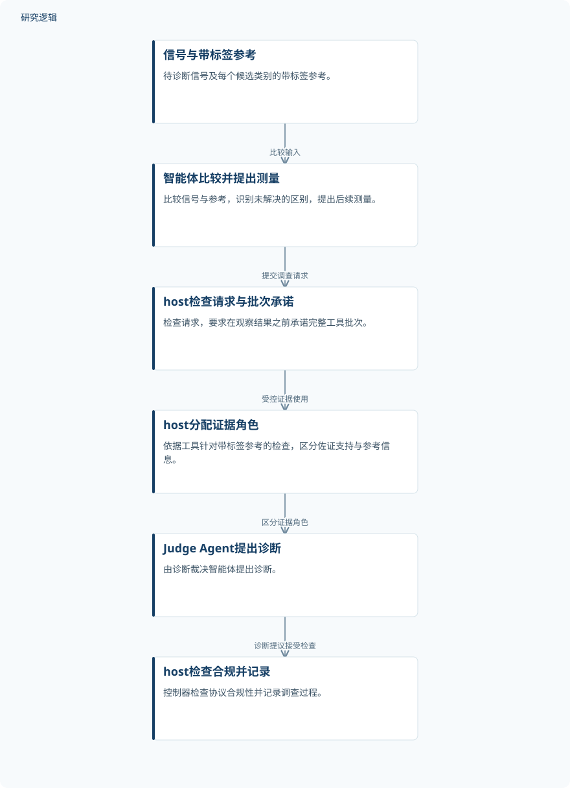

摘要解读
Agentic4PDM：面向工业故障诊断的宿主控制证据准入框架
Agentic4PDM: Host-Governed Evidence Admissibility for Industrial Fault Diagnosis
解读更新 2026-11-10 14:58 · 依据公开摘要整理，未核验全文细节
工业故障诊断中，大模型会调用分析工具，并不等于能可靠地使用分析结果。Agentic4PDM关注这一差别：让智能体灵活调查信号，同时由确定性控制器约束证据的使用，避免把薄弱或冲突的结果解释成强结论。
文章目录
诊断难点不仅是缺标签，还有证据歧义
这项研究将工业故障诊断视为分类任务：把传感器时间序列窗口分配到预定义的健康状态或故障类型。标签稀缺、运行工况变化，使反复训练专用分类器的成本较高；但信号中的周期性、趋势与瞬态结构，仍可能通过可复用的分析工具提供诊断信息。
大语言模型智能体可以选择并解释工具，但固定规则或训练得到的指导未必能消除每段信号的歧义。反过来，若解释不受约束，又可能夸大弱证据或相互冲突的结果。因此，本文把调查的灵活性与证据使用权限分开处理。
智能体提出调查，host约束证据使用
在Agentic4PDM中，智能体将待诊断信号与每个候选类别的带标签参考进行比较，识别尚未解决的区别，并提出后续测量。确定性软件控制器host执行契约检查式门控裁决（CCGA）：检查请求，要求在看到结果之前承诺完整的工具批次，并依据工具针对带标签参考的检查结果分配证据角色。
这些角色区分可用于佐证的支持与仅供参考的信息。Judge Agent提出诊断，host负责检查协议合规性并记录调查过程。框架既支持使用预训练表征和带标签参考、不训练任务专用诊断模型的设置，也支持进一步调查已训练模型预测的标准设置。这里的“免训练”不等于不需要带标签参考。
依据摘要整理的诊断与证据控制示意


概括智能体调查、host证据控制与诊断提议之间的关系，不代表论文原图，也不补充摘要未说明的实现细节。
下载 SVG图示关系说明
实线表示相邻阶段的信息流，虚线表示跨阶段联系或反馈。
信号与带标签参考 → 智能体比较并提出测量：比较输入；智能体比较并提出测量 → host检查请求与批次承诺：提交调查请求；host检查请求与批次承诺 → host分配证据角色：受控证据使用；host分配证据角色 → Judge Agent提出诊断：区分证据角色；Judge Agent提出诊断 → host检查合规并记录：诊断提议接受检查
摘要报告宏平均F1提升，消融支持受控流程
摘要报告，在选定的轴承与电机诊断挑战，以及客户提供的未筛选工业测试集上，Agentic4PDM相较所评估的诊断基线和智能体基线，取得了汇总宏平均F1的提升。消融结果也进一步支持受控工作流程的价值。
这一结果支持继续关注证据治理在诊断中的作用，但摘要没有给出提升幅度或各测试集的逐项表现，不能据此推断每种故障、每种工况或每个比较对象上都取得提升。
样本构成与验证边界仍需进一步核对
仅凭摘要，无法判断样本规模、类别分布、数据划分、带标签参考的选取方式，也无法核对基线配置、结果波动和消融细节。客户测试集未经筛选，并不自动意味着覆盖所有工业场景；跨设备与跨工况的适用范围，以及工具调用成本和诊断时延，仍需进一步阅读确认。这些是摘要未交代的信息，不代表论文没有开展相关工作。
阅读启发：追问证据如何获得诊断资格
阅读启发：对智能运维而言，值得关注的不只是智能体调用了什么工具，还包括工具结果凭什么能够支持诊断。进一步阅读时，可重点追问：佐证信息与参考信息如何划分，冲突结果如何进入裁决，以及消融比较能在多大程度上说明受控流程的作用。这些问题直接关系到如何理解摘要报告的性能提升。
以上为本站阅读启发与建议，不是论文已验证的结论。